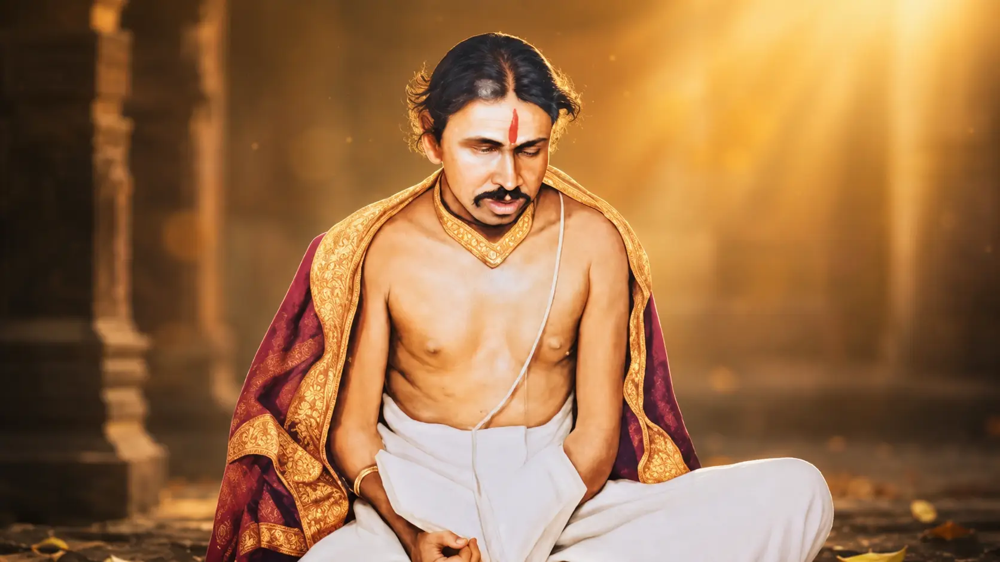
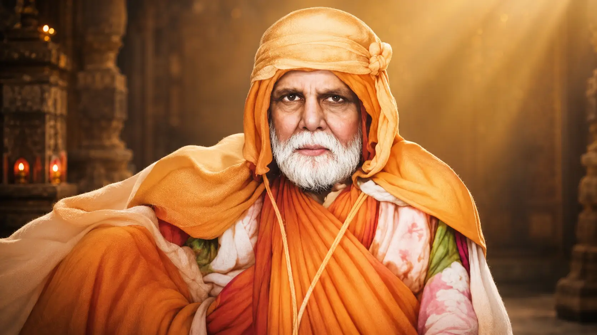
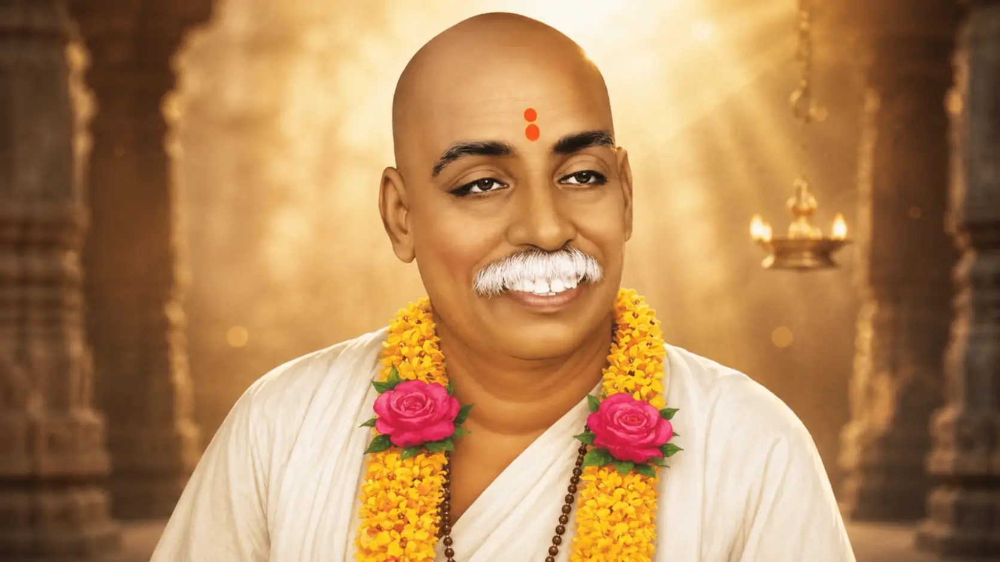

संत ज्ञानेश्वर महाराज

संत तुकाराम महाराज

संत एकनाथ महाराज

संत नामदेव महाराज

संत जनाबाई

संत बहिणाबाई

संत गजानन महाराज

संत गोरा कुंभार

संत मुक्ताबाई

संत चोखामेळा महाराज

संत नरहरी सोनार

संत कबीर

संत कान्होपात्रा

संत मीराबाई

संत निवृत्तीनाथ महाराज

संत रामदास स्वामी

संत सावता माळी

संत सेना महाराज

संत सोपानदेव

संत भानुदास महाराज

संत गुलाबराव महाराज

संत गाडगे महाराज

संत तुकडोजी महाराज

संत निळोबाराय महाराज

संत भगवानबाबा महाराज

संत नारायण महाराज देहूकर